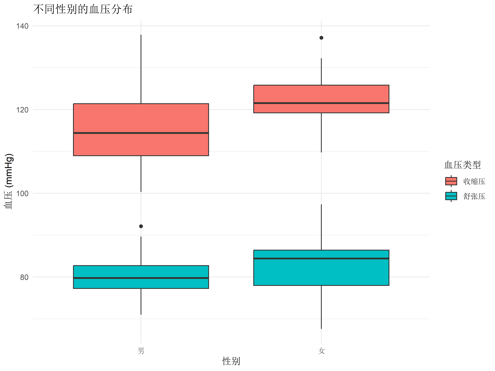

| 软件 | 价格 | 学习曲线 | 灵活性 | 可重复性 |
|---|---|---|---|---|
| R | 免费 | 较陡 | 极高 | 很好 |
| SPSS | 昂贵 | 平缓 | 中等 | 一般 |
| GraphPad | 适中 | 平缓 | 较低 | 一般 |
2 R语言与医学研究基础
扩展阅读
本章内容的扩展阅读和相关代码可在微信公众号【R语言与可视化】获取。
2.1 为什么医学生需要学习R语言
2.1.1 医学研究中的数据分析需求
在现代医学研究中，数据分析已经成为一项不可或缺的技能。无论是临床试验、流行病学研究，还是基础医学实验，都需要处理和分析大量的数据。以下几个方面特别重要：
- 临床研究数据的统计分析
- 医学图像处理
- 基因组学数据分析
- 医学文献的元分析
- 临床预测模型的构建
2.1.2 与其他统计软件对比
2.2 R与RStudio环境搭建
2.2.1 软件安装与配置
# 检查R版本
R.version.string[1] "R version 4.4.2 (2024-10-31 ucrt)"# 检查已安装的包
installed.packages()[1:5, c("Package", "Version")] Package Version
abind "abind" "1.4-8"
alabama "alabama" "2023.1.0"
ambient "ambient" "1.0.2"
AnnotationDbi "AnnotationDbi" "1.68.0"
ape "ape" "5.8-1" 2.2.2 RStudio界面详解
RStudio的界面分为四个主要区域：
- 源代码编辑器（左上）
- 编写R代码
- 创建R Markdown文档
- 控制台（左下）
- 直接执行R命令
- 查看输出结果
- 环境/历史记录（右上）
- 查看当前变量
- 浏览命令历史
- 文件/图形/包/帮助（右下）
- 管理文件
- 查看图形输出
- 安装和加载包
- 访问帮助文档
2.3 第一个医学分析案例
2.3.1 血压数据分析脚本编写
让我们通过一个简单的血压数据分析来开始我们的R语言学习之旅：
代码
# 载入需要的包
library(tidyverse)
# 创建示例数据
set.seed(123)
bp_data <- data.frame(
患者ID = 1:30,
收缩压 = rnorm(30, mean = 120, sd = 10),
舒张压 = rnorm(30, mean = 80, sd = 8),
年龄 = sample(30:70, 30, replace = TRUE),
性别 = factor(sample(c("男", "女"), 30, replace = TRUE))
)
# 基本统计描述
summary(bp_data[, c("收缩压", "舒张压")]) 收缩压 舒张压
Min. :100.3 Min. :67.61
1st Qu.:113.3 1st Qu.:77.57
Median :119.3 Median :80.38
Mean :119.5 Mean :81.43
3rd Qu.:124.9 3rd Qu.:86.06
Max. :137.9 Max. :97.35 2.3.2 结果解读与可视化
让我们创建一个简单的血压数据可视化：
代码
ggplot(bp_data, aes(x = 性别)) +
geom_boxplot(aes(y = 收缩压, fill = "收缩压")) +
geom_boxplot(aes(y = 舒张压, fill = "舒张压")) +
labs(
title = "不同性别的血压分布",
y = "血压 (mmHg)",
fill = "血压类型"
) +
theme_minimal() +
theme(text = element_text(family = "STKaiti"))
练习
- 尝试修改上述代码，添加年龄组的分析
- 计算收缩压和舒张压的相关系数
- 创建一个散点图来展示年龄与血压的关系
2.4 本章小结
在本章中，我们：
- 了解了为什么要学习R语言
- 完成了R和RStudio的安装配置
- 熟悉了RStudio的基本界面
- 完成了第一个医学数据分析案例
下一章，我们将深入学习R语言的基础数据类型和数据结构。